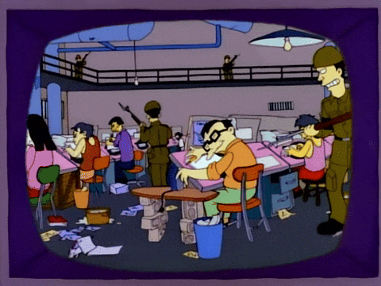
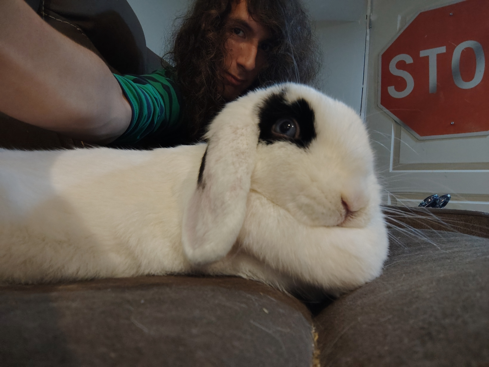

there is an old episode of the simpsons where they included this bit where they had the cartoon newscaster reporting on a news segment on how american cartoons are made in north korea the writters must have been pretty upset with how some american companies were using north koreas SEK animation studio as a cheap short cut when they didint want to hire animators from any free countries and this makes sense and is almost benign or banal of an oponion if it wasnt for the fact that years later fox would use north korean animators to help make the simpsons movie in 2007 the irony is almost upseting id imagine that most if not all the writters that were around to make that episode were gone by the time the simpsons movie was already moving towards production but it dosent change much it still happend and they still thought that it was a good idea the simpsons have no artistic integrity today in 2026 somewhere along the line the artists and writters started getting lazy and sick of their show and stopped caring about their job they let FOX take over and the artist did a 180 degree turn from being outraged to being complicit in the growing genericism of american media and the publics deteriorating relationship with art as a whole these writters and artist dont have artistic integirty and it is hurting creativity and stifling inovation in our TV shows and movies eventually the simpsons will have to end these reheated TV dinners cant be contenuied any longer they need to be replaced by real stories from new faces it couldnt be any more clear then it is today we need to quit giving them the money to do these things

bunny bunny bunny bunny bunny....bunny bunny bunny bunny bunny....bunny bunny bunny....bunny bunny bunny bunny bunny....bunny bunny bunny bunny bunny....bunny bunny bunny....bunny bunny bunny bunny bunny....bunny bunny bunny bunny bunny....bunny bunny bunny....bunny bunny bunny bunny bunny....bunny bunny bunny bunny bunny....bunny bunny bunny....bunny bunny bunny bunny bunny....bunny bunny bunny bunny bunny....bunny bunny bunny....bunny bunny bunny bunny bunny....bunny bunny bunny bunny bunny....bunny bunny bunny....bunny bunny bunny bunny bunny....bunny bunny bunny bunny bunny....bunny bunny bunny....bunny bunny bunny bunny bunny....bunny bunny bunny bunny bunny....bunny bunny bunny....bunny bunny bunny bunny bunny....bunny bunny bunny bunny bunny....bunny bunny bunny....bunny bunny bunny bunny bunny....bunny bunny bunny bunny bunny....bunny bunny bunny....bunny bunny bunny bunny bunny....bunny bunny bunny bunny bunny....bunny bunny bunny....bunny bunny bunny bunny bunny....bunny bunny bunny bunny bunny....bunny bunny bunny....bunny bunny bunny bunny bunny....bunny bunny bunny bunny bunny....bunny bunny bunny....bunny bunny bunny bunny bunny....bunny bunny bunny bunny bunny....bunny bunny bunny....bunny bunny bunny bunny bunny....bunny bunny bunny bunny bunny....bunny bunny bunny....